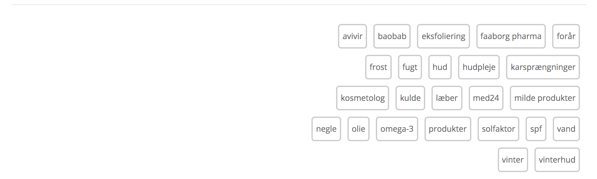

Forside Sund & smuk Mode Ibiza boheme – stilguide til det trendy ferielook
Skal du ned til sydens sol? Ifør dig disse luftige trends for at skabe det helt rette, afslappede ferielook uden at gå på kompromis med komforten.
Det kan være rart med lidt stof mellem lårene, når det er rigtig varmt, og dette off shoulder-playsuit er både behageligt og sødt. Style med en stor sommerhat og et par strappy sandaler.
Pep dit outfit op med lidt farve. Gul er en stor farve igen denne sommer, men hvis du ikke vil gå all in på et gult look, kan du inkorporere farven i dine accessories.
Blomsterprint er trendy igen, igen (florals for spring, groundbreaking!), og denne gule badedragt er da ikke til at stå for. Style den med en silkekimono og en strandtaske for det ultimative ibiza boheme-look.
Et par sandaler er uundværlige til solferien, og disse er ekstra trendy med guldnitter – og så er de flade, så du ikke behøver gå på kompromis med komforten.

Alle statements behøver jo ikke være dagsordensættende. Lad dine holdninger få lidt fri sammen med dig med denne T-shirt, der melder om strandferie.
Lad den stramme sag blive hjemme, og hop i en luftig kjole med flæseeffekt. Den glade farve og det feminine print er helt perfekt både til strand- og byturen.
Du kommer formentlig til at bruge rigtig meget tid iført badetøj, så hvorfor ikke vælge noget, du føler dig lækker i? Denne sporty bikini-bh fra Tommy Hilfiger fås også i rød og marineblå.
Husker du de mange lyseblå off shoulder-skjorter, der hittede sidste år? Dem kan du sagtens bruge igen. Denne sæson er det nemlig stadig hot at følge den søde trend, og hvis du ikke var med sidste gang, er her et godt bud på et item, der skal tilføjes (ferie)garderoben.
Style en af dine mange, hvide T-shirt med en blomsterprintet, blå nederdel med flæsedetaljer, så opnår du nemt og hurtigt et ferielook, der er som taget ud af sæsonens trendkataloger.
Denne artikel indeholder affiliate-links, der giver os kommission, hvis du køber noget. Din pris forbliver den samme. Redaktionen udvælger selv produkterne, og hvis du køber gennem et affiliate-link, støtter du driften af MY DAILY SPACE.
